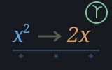

alg is algebra over AlgEx, where the values are
not numbers but the formulae that produce them. An expression type,
a parser and a printer, exact rational arithmetic, a canonical-form
simplifier, symbolic differentiation, expansion and factorisation, partial
fractions, limits, a bounded integrator, equation solving, first-order ODEs,
Taylor series — and the word that justifies the machine,
AlgToFn, which turns an expression into a function value the
rest of the tree can call. Every word is pure and prefixed
Alg.
Read these two before anything else. The machine cannot be used without knowing them, and both are decisions that could not be changed later without rewriting every word: there is no subtraction node and no division node, and numbers are exact rationals.
Six variants, not eight. a - b is a sum with a term
multiplied by −1; a / b is a product with a factor raised
to −1:
AlgNum(AlgNumer, AlgDenom) ' exact rational, always normalised
AlgVar(AlgName)
AlgSum(AlgTerms) ' two or more
AlgProd(AlgFactors) ' two or more
AlgPow(AlgBase, AlgExpo)
AlgCall(AlgFn, AlgArg) ' sin, cos, exp, ln, ...That is extra work at construction, and AlgSubOf and
AlgDivOf hide it. What it buys is that every function here has
six cases instead of eight — and, the real prize, the simplifier never
has to reason about a - b + b, because there is no subtraction
to reason about. Collecting like terms over a flat n-ary sum is one
Fold; over a binary tree with a subtraction node it is a
research project. AlgShow reconstructs both on the way out, so
you never see the representation.
1/3 + 1/6 is exactly 1/2, never
0.5. This is what separates a CAS from a
calculator. The moment it is 0.5, the simplifier cannot tell
1/3 + 1/6 - 1/2 from a small number, AlgFactor
cannot find rational roots, and AlgPartFrac cannot solve for its
coefficients. It is also why AlgMaclaurin gives you
1/120 and not 0.008333.
Decimals entering the machine are rationalised by continued fraction to
the simplest rational within a tolerance —
AlgOf(0.1) is 1/10, not the double's exact binary
value 3602879701896397/36028797018963968, which is technically
faithful, practically useless, and makes every subsequent gcd enormous.
Every calculus and solving word in eng takes a
quotation. None of them could take a formula, because a formula was
not a value anywhere in the tree. AlgToFn closes that:
Include "alg.shoddy"
Include "eng.shoddy" ' both — neither includes the other
Def Main()
Let e = AlgParse("x^3 - 2*x - 5")
Let f = AlgToFn(e, "x")
Print(EngZeroOf(f, 2, 3)) ' 2.0945514815 — solved numerically
Print(AlgShow(AlgDiff(e, "x"))) ' 3 * x ^ 2 - 2 — differentiated exactlyA formula read from a config file, a CSV column header or a user prompt
becomes a function value, and every numeric word in eng accepts
it unchanged. Neither machine includes the other — a
quotation is a builtin type, so they compose with no dependency in either
direction, and a program that only wants symbolic differentiation does not
drag in a unit table.
Integration, factorisation, limits, solving, parsing and the ODE solver
all return the language's Result. And Err
here usually means "outside the implemented rules", which is an ordinary
answer about the input rather than a fault:
AlgFactor(AlgParse("x^2 + 1"), "x")
' Err("IRREDUCIBLE OVER THE RATIONALS", 0)
AlgInteg(AlgParse("exp(x^2)"), "x")
' Err("NO RULE FOR EXP OF A NON-LINEAR ARGUMENT", 0)The first states a true fact about the polynomial. The second is correct
because exp(x²) has no elementary antiderivative — no
amount of engineering would find one. Neither says "FAILED",
because that would be a different and less useful claim.
At is 0 where there is no position and the
1-based token offset where there is, which is how one Result
serves both the parser and the rule boundary.
Print(AlgShow(AlgParse("2*x + 3*x"))) ' 5 * x — simplified on the way in
Print(AlgShow(AlgParse("a - (b - c)"))) ' a - (b - c) — minimal brackets
Print(AlgToNumber(AlgParse("2^3^2"))) ' 512 — ^ is right-associativeAlgParse aborts on a bad parse and is the one for a test or
a literal. AlgRead is total, returns a Result, and
is the one for anything a user typed. Precedence is conventional and pinned:
^ is right-associative and tighter than unary
minus, so -x^2 is -(x^2) and
2^3^2 is 512.
Print(AlgShow(AlgDiff(AlgParse("x * sin(x)"), "x"))) ' sin(x) + x * cos(x)
Print(AlgShow(AlgDiff(AlgParse("x^x"), "x"))) ' x ^ x * (1 + ln(x))
Select Case AlgInteg(AlgParse("exp(2*x)"), "x")
Case Ok(i)
Print(AlgShow(i)) ' (1 / 2) * exp(2 * x)
Case Err(why, at)
Print(why)Differentiation is total — every representable
expression differentiates, so it returns an AlgEx and not a
Result. That is a genuine asymmetry with integration and it is
worth knowing: the general power rule is implemented, so x^x
works rather than only constant exponents.
Print(AlgShow(AlgOkOf(AlgMaclaurin(AlgParse("sin(x)"), "x", 5))))
' x - (1 / 6) * x ^ 3 + (1 / 120) * x ^ 5
Print(AlgShow(Nth(AlgListOf(AlgSolve(AlgParse("x^2 - 2"), "x")), 1)))
' a symbolic square root of 2, not 1.4142135624For a computer algebra system the boundary is as much of the documentation as the capability. A user who discovers it by experiment will not trust the parts that work.
x^n
including n = -1, sin/cos/exp, sums, constant multiples, and
f(ax + b) by linear substitution. Query the table at runtime
with AlgIntegRules(). No Risch algorithm, no
integration by parts, no general substitution.abs(x)/x at 0 returns an Err.Err naming which case it was.y' = g(x) and
y' = g(x)·y. Both inherit every limit of the integrator: an ODE
solver on top of a table integrator is exactly as capable as the table.atan2 and friends are
not in the table, and adding one later means adding a variant rather than
widening this one.AlgRatAdd divides by the gcd of
the denominators before cross-multiplying for exactly this
reason.AlgExpandPow refuses
above its bound rather than attempting it, because the alternative failure
mode is a mill that never returns.AlgToFn walks the tree on every call. Fine
for a solver making a hundred evaluations, not fine in a tight numeric loop.
AlgSimplify first; past that, this machine is for symbolic work
and eng is for numeric work.Never compare two AlgEx with =: structural
equality reports x + y and y + x as different.
AlgEqual simplifies both and compares canonical forms, and is
the only equality this machine offers.
But the two are not the same thing. 1/(x*(x+1)) and
1/(x^2+x) are the same function and are not
AlgEqual, because the canonical form neither factors a
denominator nor expands one — it has no basis on which to choose. Use
AlgExpand or AlgTogether first when the two sides
may disagree about that. A False means "not the same canonical
form", which is a weaker claim than "not equal".
| Word | Description |
|---|---|
| AlgRat(n, d) | The only constructor of a number. Sign on the numerator, denominator positive, gcd divided out. Errors on a zero denominator. An AlgNum built any other way compares unequal to its own normal form and breaks the total order silently. |
| AlgExact(n, d) | The same, for a caller who already has a fraction. |
| AlgOf(x) | A Number to the simplest rational within tolerance, by continued fraction. |
| AlgZero / AlgOne / AlgMinusOne | The three constants worth having by name. |
| AlgPiSym / AlgESym | pi and e as symbols, not values — which is why sin(pi) simplifies to exactly 0. |
| AlgNumOf / AlgDenOf / AlgToNumber | Read a number out. Error unless it is one. |
| AlgIsNum / AlgIsZero / AlgIsOne / AlgIsInt | Ask what it is. |
| AlgRatAdd / AlgRatMul / AlgRatDiv / AlgRatNeg / AlgRatCmp | Exact arithmetic on two numbers. |
| Word | Description |
|---|---|
| AlgVarOf(name) | A symbol. |
| AlgAddOf / AlgSubOf / AlgMulOf / AlgDivOf / AlgNegOf | The four operations and negation. AlgSubOf and AlgDivOf build the sugar the type does not have; AlgDivOf errors on a zero divisor. |
| AlgSumOfList / AlgProdOfList | The n-ary forms. |
| AlgPowOf(b, e) / AlgSqrtOf(a) | Powers. The identities apply here, so x^0 is 1 and x^1 is x before anything downstream sees them. |
| AlgCallOf(fn, arg) | A function call. Errors on a name not in the table rather than building something nothing downstream can differentiate or evaluate. |
Every builder simplifies as it goes.
AlgAddOf(x, AlgZero()) returns x, not a two-element
sum. That is not an optimisation — it is what keeps the two-or-more
invariant true, and it means most expressions reach
AlgSimplify already close to canonical.
| Word | Description |
|---|---|
| AlgParse(s) | → AlgEx. Aborts on a bad parse. For tests and literals. |
| AlgRead(s) | → Result. Total; Err carries the 1-based token offset in At. For anything a user typed. |
| AlgShow(e) | Minimally parenthesised infix, reconstructing subtraction and division. |
| AlgShowFull(e) / AlgTree(e) | Fully bracketed, and the indented tree — both for debugging. |
| Word | Description |
|---|---|
| AlgSimplify(e) | The capped fixpoint. One pass is not enough — collecting terms creates constants to fold, folding creates identities to drop — so it repeats until nothing changes, and errors on overrun rather than hanging. |
| AlgPass(e) | One rewriting pass, exposed for testing. |
| AlgCompare(a, b) | The total order: −1, 0 or 1. Numbers, then variables, then powers, products, sums, calls. |
| AlgEqual(a, b) | The only equality. See the caveat above. |
| AlgSort(xs) / AlgTogether(e) | Canonical ordering of a term list; and a sum of fractions put over one denominator — the inverse of AlgPartFrac. |
| AlgDepth / AlgSize / AlgVarsOf / AlgHasVar / AlgIsConst | Inspection. |
| AlgTwoOrMore(e) | The invariant, exposed so a test can assert it: no sum or product ever holds fewer than two elements. |
| Word | Description |
|---|---|
| AlgDiff(e, var) | First derivative. Total, and simplified before returning — the second derivative of x^3 is unreadable unsimplified and the third unprintable. |
| AlgDiffN(e, var, n) | The nth. |
| AlgGrad(e, vars) | One partial per variable. |
| AlgFns() / AlgKnowsFn(name) | The function table, and whether a name is in it. |
| AlgDiffFn(name, u) / AlgEvalFn(name, x) | The derivative and the numeric value of each. Both must exist for every name in AlgFns() — one without the other breaks AlgToFn or AlgDiff, and the test suite asserts they are in step by iterating the table. |
| Word | Description |
|---|---|
| AlgExpand(e) / AlgExpandPow(e) | Distribute. Total — every product of sums can be expanded, which is the asymmetry with factorisation. |
| AlgFactor(e, var) | → Result. Univariate, over the rationals. |
| AlgCommonFactor(e) | Pull out the integer common factor of a sum. Total. |
| AlgPolyDegree / AlgIsPoly | Degree in one variable, -1 when it is not a polynomial in it. |
| AlgPolyCoeffs(e, var) | → Result. Lowest power first, so index k is the coefficient of var^k. Unpack with AlgCoeffList. |
| AlgCoeffAt(e, var, k) / AlgFromCoeffs(cs, var) | One coefficient; and the polynomial back from a list. |
| AlgPolyDivide / AlgPolyRem | → Result. Quotient and remainder from one walk. |
| AlgPartFrac(e, var) | → Result. Distinct linear factors, by the cover-up rule. |
| Word | Description |
|---|---|
| AlgLimit(e, var, at) | → Result. Substitution, then bounded L'Hôpital on a quotient. |
| AlgLimitInf(e, var) | → Result. Degree comparison, rational functions only. |
| AlgInteg(e, var) / AlgIntegDef(e, var, a, b) | → Result. Indefinite (no constant) and definite. |
| AlgIntegRules() | What the table covers, as text, so a caller can find out what will work without reading the source — and so this page can be checked against it. |
| AlgSolve(e, var) | → Result holding a list. Ok({ }) means no solutions; Err means no method. Those are different facts and a caller can act differently on them. |
| AlgSolveFor(lhs, rhs, var) | The same, with the right-hand side moved across. |
| AlgSolveLinear / AlgSolveQuad | The two closed forms. The quadratic keeps an exact discriminant, so a surd stays symbolic. |
| AlgDeSolve(rhs, y, x) | → Result. First-order only; the arbitrary constant appears as C. |
| AlgTaylor / AlgMaclaurin | → Result. Exact rational coefficients. |
| Word | Description |
|---|---|
| AlgSubst(e, var, r) | Replace a variable with an expression. |
| AlgSubstFn(e, name, param, body) | Replace calls to a function with a body written in param. The name must be one the table knows. |
| AlgEvalAt(e, var, x) | → Number. The boundary where pi and e become values. An unbound variable is an error naming it, never a silent zero. |
| AlgEvalWith(e, names, values) | The same with several variables, as two parallel lists. |
| AlgToFn(e, var) | The bridge. → [ Number -- Number ], which every numeric word in eng accepts. |
| AlgToFn2(e, v1, v2) | The two-variable form. |
| AlgOkOf(r) / AlgWhyOf(r) / AlgIsErr(r) / AlgAtOf(r) / AlgListOf(r) | Reading a Result without a Select Case, for a caller who has already checked or a test that knows the answer. AlgOkOf errors on an Err. |
George Peacock (1791–1858) was born at Denton in Wharfedale, in the West Riding of Yorkshire, and his Treatise on Algebra of 1830 founded what he called symbolical algebra: the doctrine that algebra is the manipulation of symbols according to stated rules, valid independently of what the symbols are taken to mean. Before Peacock, algebra was understood as generalised arithmetic and an expression had to stand for a quantity; after him, the rules could be studied and applied on their own terms.
That doctrine is not a decorative parallel to this machine — it is
its operating premise, exactly and literally. AlgDiff
differentiates x^3 without knowing or caring what
x is, because the power rule is a rule about symbols. A
computer algebra system is only possible at all because Peacock was right.
And Denton sits in Wharfedale a few miles from Otley, in the same riding as
the mills this language is named for.
| User | How | |
|---|---|---|
 | seedalg | AlgRead, AlgShow, AlgSimplify, AlgExpand, AlgFactor, AlgSolve and AlgDeSolve, bridged onto the reckoner stack at the text boundary. |
| Machine | Why | |
|---|---|---|
| seq | Flatten is the whole of expansion and variable collection, All and Any carry the invariants, Append and Taken build the coefficient lists, and IndexOf looks up a binding. | |
| str | Join assembles the printer's output and StrRep indents AlgTree. |
Not eng, and not bool. The three do not overlap and none
includes another: eng is continuous mathematics over Number, bool is discrete logic over bit patterns and Boolean, and this is algebra over AlgEx.
AlgToFn is the bridge, and a quotation is a builtin type, so it
costs neither machine a dependency.